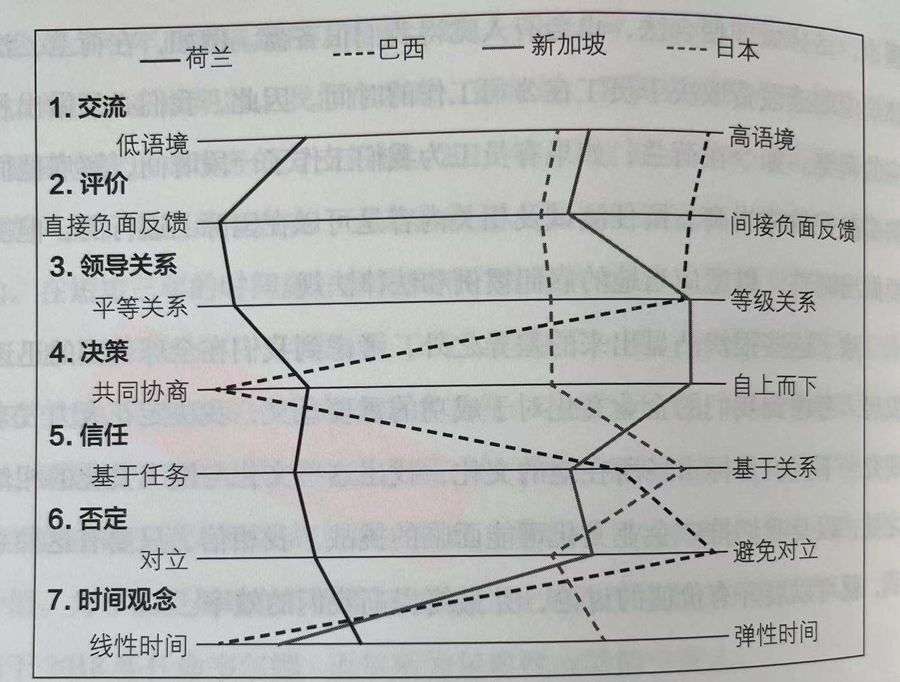
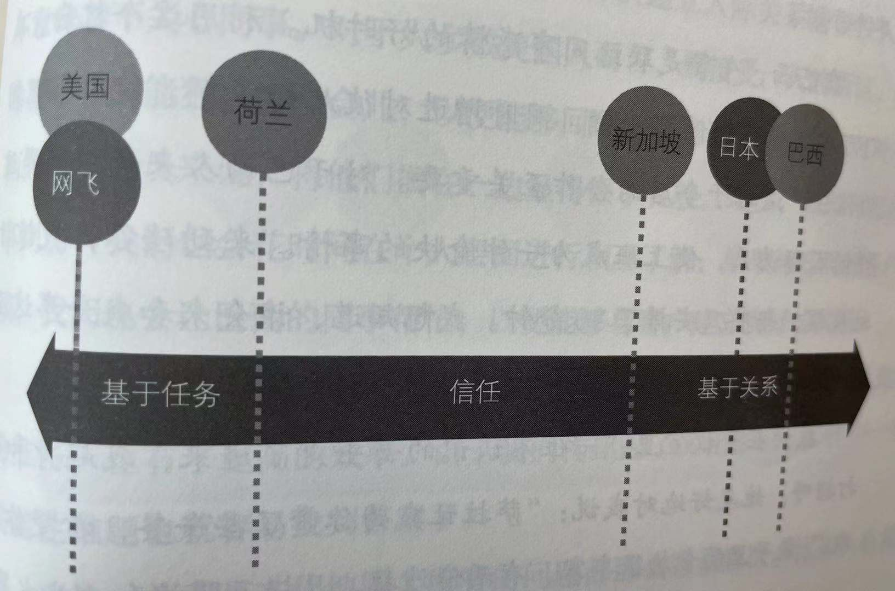

推荐序一 企业如何最大化地驱动创新
VIII 网飞文化的内核是人才，它的理论基础是我们大家必须关注的"人才效益现象"，即一个富有才华的人所产出的创新效果将数倍于一个能力中等的人，并且随着技术和创新的发展，这种倍数还在不断增加。这里需要强调的是，这种人才效益现象针对的是创新能力起决定性作用的工作岗位，比如技术研究和产品开发等。针对这一现象，里德提出将人才密度作为企业创新能力的内核基础。因为优秀人才能激励其他优秀人才，而精英创造的出色成果能感染更多的出色人才。一个企业只有具备少量的人才是不够的，它需要累积足够多的人才密度才能具备高水平的创新能力。
IX 基于这个管理理念，网飞通过大胆探索，建立起了多项提高人才密度的企业文化和管理机制。第一是人才薪酬策略。网飞执着地寻找一流人才加盟，并坚定不移地付出市场上相应岗位的最高薪酬。
. 网飞的做法是反常规的，在网飞，即使员工工作努力并做出贡献，但只要跟不上企业创新步伐就可能随时被告知离岗。网飞会付出比市场高很多的离职安置费。这种独特的做法在行业界是颇有争议的，但是通过多年实践，网飞的实际员工离职率并没有显著高于行业平均水平，而其产生的创新效益是大家有目共睹的。
. 因为要让企业高速创新，它的组织和业务运营必须快速决策，并得到及时且真实的反馈信号，尤其是领导层做出的重要决策。这里最为重要但最难的是坦诚沟通，特别是领导和员工之间的沟通。在企业沟通中讲真话不容易，往往对员工有压力并且可能带来职业风险。打造这种文化需要领导以身作则，需要智慧、勇气、胸怀和长期努力。
X 在人才高密度和有效反馈的基础上，网飞创建了一系列新颖高效的企业管理机制，它们都围绕着一个共同的核心：在管理上放权，赋予员工更多的自由，同时也让员工承担相应的企业责任。 它们的核心宗旨是让员工最大化地施展他们的才华和对企业的责任心，使企业能最大化地发挥人才潜能，驱动创新。
XI 网飞采用的是树形的决策模式，企业领导层只负责树根的部分，确保整个企业有高度一致的战略方向，同时赋能每一根树枝，让它们能基于相应的业务情景来做决策。这里需要指出一点，里德的技术背景也起了重要的作用，业务网飞的组织架构是源于软件系统架构中低耦合的设计原则，这种设计能使软件系统在规模化成长的同时保持灵活高效。 对于高速成长的企业也一样。相对于从上到下高耦合组织架构而言，"认识一致，松散耦合"的组织体系是更为有效的。
XII 比如需要努力做到网飞文化的一个重要前提：企业员工能像"成年人"一样工作，能自主地维护企业利益和承担企业责任。
自序一 没有规则的规则
XXI 如果你给员工更多的自由，而不是制定规则来阻止他们发挥自己的判断，他们会做出更好的决定，也更有责任感。 这样，员工工作起来会更愉快，更有动力，公司经营也会更加灵活。但是，要实现这种自由，你必须有一个基础，即让公司先从一下两个方面得到提升：
XXII 第一，提高人才密度。
在大多数公司，规则和控制流程针对的都是那些表现马虎、做事不专业或不负责任的员工。但如果你规避或者剔除掉这样一些人，你就完全不需要那些规则。如果你能组建一支几乎完全由高绩效员工组成的团队，那么大多数规则都是可以去掉的。人才密度越高，您能提供的自由度就越大。
第二，提高坦诚度。
有才华的人身上有很多东西值得学习。但在一般情况下，讲究客套的人际交往会妨碍员工做出必要的反馈，从而影响绩效水平的提升。如果优秀的员工都养成坦诚反馈的习惯，那么他们就能更好地完成工作，同时对彼此负责，这就进一步减少了对传统管控的依赖。
. 最重要的是，一旦你着力营造这样的文化氛围，企业管理便进入了一个良性循环。取消管控将构建一种"自由与责任"（Freedom & Responsibility，简称S&R）的文化氛围，这也是网飞员工常挂在嘴边的词。
自序二 把员工当成真正的成年人
独特的网飞文化 XXV 不同于一般企业，网飞的企业文化因其表里如一而受人称道，但也可能是臭名昭著，这取决于你看待的角度。
以不同的方式串联关键点 XXXII 史蒂夫·乔布斯在斯坦福大学的毕业典礼上做过一场著名的演讲。他在演讲中说道："面向未来，你无法将所有节点串联在一起；只有回望过去，你才能看清这些节点是如何串联在一起的。你要相信，这些节点会在未来以某种方式联系在一起。所以你要有一种信念，这种信念可能是你的直觉、你认定的命运，抑或你向往的生活、你所相信的因果报应，或者其他某种想法。这种方法从来没有让我失望过，这让我的生活变得与众不同。"
XXXIII 现在的关键，就是要鼓励人们提出更多的质疑。在大多数组织机构中，人们总是遵循着他人的轨迹去串联生活的节点，以维持工作与生活的现状。但是某一天，有人用不一样的方式连接了这些节点，就会对整个世界有一种全新的认识。
第一部分 迈向自由与责任的企业文化
1 优秀同时造就优质工作环境
优秀员工彼此激励共同成长 9 我们得知，在一个真正人才济济的公司，每个人都会努力工作。工作效率高的人，在整体人才密度高的环境中，也能得到更好的发展。
. 事后看来，一个团队只要有一两个表现欠佳的人，就会拉低整个团队的绩效。如果你有五名优秀员工和两名表现欠佳的员工，这两名表现欠佳的员工会造成如下后果：
- 消耗管理者的精力，使他们没有时间把精力放在优秀员工身上。
- 团队讨论的质量得不到保证，拉低团队整体智商。
- 强迫他人围绕着他们开展工作，致使工作效率低下。
- 排挤其他追求卓越的员工。
- 向团队表明你接受平庸，从而使问题更加严重。
对于优秀员工而言，好的工作环境并不意味着一间豪华的办公室，一个好的健身房，或者一顿免费的寿司午餐，而在于周围全是才华横溢的人，具有合作精神的人，让你不断进步的人。如果每一名员工都很优秀，他们就会相互学习、相互鼓励，工作表现也会迅速得到提升。
第一个关键点 12 构建一个高效且具有创造力的工作环境，离不开出色的员工。他们背景不同，看问题的角度各异，但他们有着共同的特点，那就是：具有超凡的创新能力，能够完成繁重的任务，并能很好地相互协作。 你必须首先确保这一关键点落实到位，否则其他原则都没有意义。
2 以积极的态度说出你真实的想法
17 我也努力把坦诚这一信条带到公司。我开始鼓励每个说出自己的真实想法，但意图必须是积极的，不要攻击或伤害他人，从而将各种想法、意见和反馈摆到台面上来加以解决。
18 我们那时就有这样一个提法："评价一个人，要人前人后一个样。"我也尽可能地营造这样一种氛围。每当有人来找我抱怨另一名员工时，我都会问："你直接跟他谈的时候，他自己是怎么说的？"这个提法的确非常激进。在大多数情况下，无论是社交场合还是专业领域，坚持说出自己真正想法的人很快就会被孤立，甚至遭到排斥。但是在网飞，我们却热烈拥抱这样一种态度。
20 在给予反馈和接受反馈成为一种常态之后，人们会学得更快，工作效率也会更高。
高绩效 + 无私的坦诚 = 极高绩效 22 在网飞，如果你与同事有不同意见，或者是有好的建议却不说出来，就会被视为对公司不忠，因为你本可以为企业提供帮助，但你却没有这样做。
我们不喜欢但需要坦诚 24 要说有什么比面对面的批评更令人不安的，那就是挡着众人的面收到负面反馈。
. 我们的大脑对遭受群体排斥这类信号特别关注，因为大脑具有求生的机制，而我们最成熟的生存技能之一就是尽可能寻求安全。在原始社会，遭受排斥就意味着孤立和死亡。 如果有人在你的部落宗族面前指出你犯的错误，你的大脑中一直对危险保持警惕的杏仁核——这也是大脑中最原始的一个结构——将会发出警报："你将受到群体的排斥。"面对这种情况，我们的本能反应就是逃跑。
同时，也有大量的研究表明，收到积极反馈会刺激大脑释放催产素。这种令人愉悦的激素也能使母亲在哺乳时感到快乐。这便能解释为什么很多人喜欢说恭维的话，而不愿给出诚实的、建设性的意见。
. 他们发现，尽管赞美可以带来愉悦，但多数人还是一位，同积极反馈相比，纠正反馈更能帮助我们提高水平和能力。
.
- 57%的受访者表示，他们希望获得纠正性反馈而不是积极反馈。
- 72%的人认为，如果他们受到更多的纠正性反馈，他们的水平和能力将会得到提高。
- 92%的人同意："负面意见如果反馈得当，有助于提高工作水平和能力。"
反馈环：培养坦诚的文化 27 反馈环是提高绩效的有效的方法之一。如果在我们合作共事的过程中，能不断地提出并接受到反馈，便能学得更快，完成得更多。反馈有助于我们避免错误，营造共担责任的范围，同时减少对权力和规则的需求。
鼓励员工对领导提出反馈 . 很多人读过《皇帝的新装》，里面讲述了一个愚蠢的皇帝赤裸裸地在百姓面前游行，还自以为穿着有史以来最精美华丽的衣服。然而，没有人敢说出来，除了一个不懂得等级、权力以及后果的孩子。
28 你在组织中的地位越高，收到的反馈就越少，你就越有可能是"赤裸着身体在工作"，也越容易犯下除你之外所有人都看得见的错误。这不仅会导致整个机构的运作出问题，而且还很危险。
30
在我过去的工作中，一切都取决于老板喜欢谁，不喜欢谁。如果你给老板反馈意见，或者在众人面前与老板闹分歧，那你的前途就毁了。你会发现自己就此遭到冷落。
31
我简直不敢相信，这样一个低级别的员工竟敢在众人面前顶撞特德。根据我过去的经验，这无异于自毁前程。我的脸变得通红，直想躲到椅子下面去。
然而，事实却让我完全震惊了。会议结束后，特德站起身来，把手放在那个家伙的肩膀上。"今天的会议开得非常好，感谢你的发言。"他笑着说。我惊愕得下巴都快掉了。
.
他说："布莱恩，如果哪一天你因为害怕不受待见而不干提出反馈意见，那你可能就得离开网飞了。我们聘请你来，就是需要听你的意见。会议室里的每一个人，都有责任把他的想法坦率地告诉我。"
特德让我清楚地看到，一个领导者想要获得员工的反馈，有些事情是必须要做的。他不仅要向员工征求反馈，而且要告诉员工，自己期待着他们的反馈（就像他对布莱恩所说的那样）。当你收到反馈时，需要通过认同提示进行回应。在上述例子中，特德就将手放在那名员工的肩膀上。
4A反馈准则 36
提供反馈
- 目的在于帮助（Aim to assist） ：反馈的目的必须是积极的。反馈不是为了发泄，不是为了中伤他人，也不是为自己捞取资本。反馈者应清晰阐述这样做对他人和公司有什么样的好处，而不是对自己有什么好处。
- 反馈应具有可行性（Actionable） ：你的反馈必须说明接收人可以做一些什么样的改变。
接收反馈
- 感激与赞赏（Appreciate） ：我们在受到批评时都会为自己辩护或寻找借口，这是人类的本能；我们都会条件反射式地进行自我保护，维护自身的名誉。当你接收到反馈时，你需要有意识地反抗这种本能，并且问一问自己："我该如何去认真地聆听，以开放的心态去认真地对待反馈？既不辩护，也不生气，还应该满怀欣赏和感激。"
- 拒绝或接受（Accept or discard） ：在网飞，你会收到很多人的反馈。你需要认真地听，同时也认真地思考。不是每条反馈都要求你照办，但有必要向反馈者真诚地致谢。你和反馈者都必须清楚：对反馈意见的处理完全取决于反馈的接受者。
理清什么是无私的坦诚，什么是有才华的混蛋 40 和我们共事的，不乏聪明绝顶的人。这类人你是知道的，他们具有惊人的洞察力，口齿清楚，解决问题时总能直接要害。你的机构中人才越密集，聪明人也就越多。
但是，如果周围全是聪明人，你可能就有危险了。有时候，有才华的人听到赞美之词太多了，就会觉得自己真的比其他人更优秀。如果有他们认为不明智的想法，他们可能会报以嘲笑；如果有人发言不够清晰，他们可能会翻白眼；他们还会侮辱那些他们认为天赋不如自己的人。换句话说，这些人就是混蛋。
如果你在团队中倡导坦诚的文化氛围，就必须把这样的人剔除出去。许多人可能会认为"这个人确实聪明:，没有他不行"，但是，不管这样的人有多么出色，如果让他留在团队里，你营造坦诚氛围所付出的努力就不会有太好的效果。混蛋对这个团队的效率有很大的影响，他们可能会将你的组织从内部撕裂。因为他们老是喜欢中伤同事，然后丢下一句："我这是坦诚。"
44 有了人才密度和坦诚的氛围，你就可以着手取消管控，营造更加自由的工作环境。
3上 取消限期休假制度
47 靠时间来衡量价值的想法源于工业时代，那时的工作都是靠人工完成，但现在主要由机器完成。
49 事实证明，我们很多杰出的创意都是员工在放松的状态下灵光乍现。
休长假，领导要带头 56 老板的行为对员工有很大的影响，甚至可以改变一种文化原有的习惯。
无限休假制度让自由更具价值 61
我们公司就是基于以下三条准则：（1）始终为公司的最大利益行事；（2）绝不做任何妨碍他人实现其目标的事；（3）努力实现自己的目标。只要满足上述几条，员工完全可以按照自己的意愿休假。
给予自由，再落实责任 63 给员工更多自由，可以使他们更具归属感和责任感。于是我和帕蒂便提出"自由与责任"的理念。我们之所以这样说，不仅仅是因为我们需要两者兼有，而是员工获得更多自由之后，自然就会产生归属感和责任感。我也逐渐明白了，自由与责任的关系并不是像我先前所想的那样背道而驰，相反，自由是通往责任的一条途径。
3下 取消差率和经费审批
66 几个月后，格兰特辞职了。在离职面谈的时候，他说："当我看到高层是如何消磨时间之后，我就对公司失去了信心。"
我完全认同他的说法。如今在网飞，我不希望公司任何人在这种没有意义的讨论上浪费时间；我更不希望有才华的员工在发挥聪明才智的时候，却被一些愚蠢的规章制度困扰，这无疑会破坏富有奇思妙想和充满创造力的工作氛围。
第三个关键点 83 企业有一支高绩效的团队，员工才会认真负责地工作；企业拥有坦诚的文化氛围，员工才会互相监督，共同维护公司利益。
第二部分 打造自由与责任的企业文化
奖金不利于灵活性 101 创造性工作要求在一定程度上解放你的大脑。如果你总想着要怎么做才能表现好，才能得到高额的奖金，那么你就缺少开放的认知空间，产生最好的想法和最好创意的可能性也微乎其微。结果，你反倒做得更差。
向猎头了解自己的市场价值 116 自从那以后，我告诉所有经理，不应该等到员工拿着竞争对手的报价来找他们的时候，再被动地给他们涨工资。如果员工的价值在上涨，而我们又不想失去这样一名员工，那么就应该把他的工作涨上去。
5 开卷管理
124 当然，谁都有秘密。我们大多数人生来就相信，保守秘密就是保护我们的安全。
. 如果你感觉别人对你隐瞒了什么秘密，你怎么可能去相信他呢？而保罗则可以毫无保留地讲出自己的感情、内心的恐惧，以及犯过的错误，这种坦诚很容易就打动了我，我觉得自己从未如此快速地相信过一个人。与保罗的这份友谊促成了我人生中很大的一个转变。从中我也看到敞开心扉，说话坦诚，可以为我们带来很多好处。
125 但是与大学宿舍相比，在工作场合保守秘密更普遍，也更具危害性。
. 根据斯莱皮恩的研究，如果你是一个普通人，在你所有的秘密当中，可能会破坏信任关系占47%；涉及谎言或财务的占60%以上；而涉及盗窃、某种隐秘关系或是工作中的不愉快的约占33%。如果你的橱柜里有太多的秘密，这些秘密会让你付出巨大的心理代价，其中就包括压力、焦虑、抑郁、孤独和缺乏自尊心。秘密也占据了我们大脑中的很多空间。一项研究显示，人们思考自己秘密所花的时间是主动隐瞒秘密所花时间的两倍。
. 由此可见，要迅速建立信任，最好的办法莫过于直接说出一个潜在的秘密。
隐秘信息 128 当然，这也是一些很细微的东西。关键在于负责人要尽可能多地跟每一名员工分享信息，保证信息的透明度。不论大事小事、好事坏事，如果你的第一反应是把信息公之于众，那其他人也会这样做。在网飞，我们称之为"阳光行动"，对此我们付出了很多努力。
把握分享信息的时间 129 保守秘密的理由有很多。但在通常情况下，什么时候该透明，什么时候该保密，这一问题却没有明确的界限。为了弄清里德是如何做出判断的，我给他做了一个测试。
.
测试场景一：信息泄露是违法的
131 他手把手教那些中学都没念过的低学历员工阅读财务报表，而这是很多公司里受过高等教育的副总裁都缺乏的能力。然后，他会把公司每周的运营和财务数据通报给每一名员工。通过这些数据，员工们可以看到公司是如何不断进步的，他们自己的工作是如何发挥成效的。这一举措，超乎想象地点燃了员工的热情，激发了他们的责任感和主人翁意识。
132 我的目标就是让员工感到自己是公司的主人，从而增强他们的责任感。
133 所以，越多的员工了解公司的战略、财务状况以及公司每天的运营情况，就越能够自行做出正确的决策，也不必牵扯那么多的层级关系。
场景测试二：组织结构调整
137 但是，如果你想建立一种透明的企业文化，却又不把这种可能的变动告诉员工，那么员工就会觉得你是一个不值得信赖的伪君子。你表面上大肆宣扬信息透明，在背后却对他忙的工作嘀嘀咕咕。所以，我的建一回事尽可能地去实现信息的透明化。
测试场景三：解雇后的沟通问题
143 对信息进行改编和操控，从而使整个公司、你自己以及其他一些员工看起来比实际情况更好，这种行为在商业界十分普遍。
144 粉饰和掩盖真相是很多领导常用的办法。殊不知，这种做法会一点点消磨掉员工对自己的信任。
测试场景四：当你把事情搞砸了......
147 那次会议上有两件事情让我颇有感触：一件就是正如我想象的那样，我讲出了事实，承认了自己的错误，感到如释重负；另一件更有意思——因为我向董事会坦诚了自己的失职，把自己的软肋暴露在他们面前，他们似乎对我的领导能力更有信心了。
148 由此我们得出一个结：自我揭露建立信任，主动求助促进学习，敢于认错赢得谅解，而公开你的失败则可以鼓励更多员工大胆地放手一搏。
149 布勒内·布朗（Brene Brown）有一本书名为《大胆：变得脆弱的勇气如何改变我们的生活、爱情、做父母和领导方式》。在定性研究的基础上，作者解释道：" 我们喜欢在别人身上看到赤裸裸的真相，却害怕将自己的一切暴露在别人面前。脆弱是你眼中的勇气，却是我自身的软肋。 "
150 同样也有研究表明：如果一个人原本就被认为效率低、能力差，要是他再去强调自己的错误，只会加深大家对他的这一印象。
. 这种倾向被称为"出丑效应"，指一个人犯了错误之后的吸引力是增加还是减少，取决于他总体表现出来的能力。
. 如果把这些数据跟里德的建议结合起来，就不难得出以下结论：一名领导有卓越的才能，又深受团队的爱戴，那么当他把自己的错误拿出来"见阳光"时，就跟容易建立起信任并起到激励的作用，他的公司也会因此受益。
6 无须决策审批
156 在网飞，我们鼓励员工不要一味认同上司的决策。我们不希望员工因为上司的否定而放弃任何一个好主意。这就是我们一直强调的：
工作的目的不在于取悦老板，而在于对公司有利。
. 当然，对于大多数企业，无论是否实行了微观管理，员工都倾向于做出最容易获得上司青睐的决策。
160 员工拥有的项目决策权越大，他们就越有归属感，就越能积极地工作。指导员工一言一行的管理模式早已过时。对于采取这类管理模式的领导者，员工称之为"微观管理者"，认为他们"专横""独裁"。
对自己认定的想法要敢于下注 164 如果你希望团队更富有创新，那么，你需要教会员工自己寻求途径推动业务发展，而不是一味地讨好老板。
下注前后需要做些什么 168 这个四步模式非常简单，可供你的员工参考。其中，"不要试图取悦老板"最容易产生效果。
169 网飞创新过程
如果你有一个令自己心动的主意，你需要：
- 收集异议或者交流想法。
- 对重大决策进行彻底检验。
- 知情指挥要大胆下注。
- 庆祝成功，正视失败。
173 你越积极地收集异议，越倡导公开表达异议，你的公司做出决策就越好。这一点适用于所有公司，无论是什么行业，有多大的规模。
180 知情指挥应当承担项目所有的责任，包括独立签署合同文件。
182 通常，对于有能力的人来说，做知情指挥意味着享有极大的自由。
187 如果你是老板，应该明确表态，希望员工能在公开场合讲述自己失败的经历。克里斯没有无视失败，没有指责其他员工，也没有推脱责任。他选择了正式失败，展现出了极大的勇气和领导风范。
189 公司之所以成功，是因为每位员工都能清楚地认识到，失败是创新的必经之路。我们不过应该惧怕失败，而应该更加坦诚地去面对。
第三部分 巩固自由与责任的企业文化
7 员工留任测试
家庭讲究"团聚"而不是"绩效" 201 在过去的数百年里，几乎所有公司都是家族企业，所有直到今天，公司的首席执行官也常常把公司比作一个大家庭。家庭代表着归属、舒适和相互扶助的长久承诺，谁不希望自己的员工对公司爱得深沉又高忠诚度呢？
从家庭式工作到高绩效团队 203 在网飞创业早期，我们同样鼓励培养家庭式工作环境，但直到2001年裁员后，公司业绩突飞猛进，我们才意识到，这种"家庭"的观念并不适合高人才密度的工作环境。
. 一份好的工作应该是在一段最适合的时期做最适合你的事。一旦你停下学习的脚步，故步自封，你就无异于让位给他人，那么他便会取代你的位置，甚至比你做的更好。
205 在一个高绩效的团队里，精诚合作与彼此信任缺一不可，所有队员既要个人能力突出，又要灵活配合。一名优秀队员，不能仅仅个人表现卓越，还需要有无私的精神，将团队利益置于个人得失之上。他要把握传球时机，懂得如何帮助队友，明白胜利的唯一途径就是让整个团队取得胜利。
. 从这时开始，我们就在公司宣传折页一个口号：
我们是一个团队，不是一个家庭。
如果我们想要成为关键，我们就得在每个位置都安排最好的队员。人们可能以为，一名队员只有犯了错误或者无法完成任务才可能下场。而事实上，在职业比赛或者奥运会比赛中，队员都明白教练的职责就是不断提升队伍，让队伍越来越好；而队员呢，为了能够继续留在队里，每次比赛都要全力以赴。
员工留任测试 206
如果有人打算明天辞职，你会不会劝他改变主意？
还是说你会接受他的辞呈，甚至感觉是松了一口气？
. 我们认为员工留任测试适用于公司的每个人，也包括我们自己。设想一下，要是别人坐了我的位子，公司是不是会更好？
210 绩效改进计划的背后其实也需要大笔的资金。如果你提交了一份4个月的绩效改进计划，那么，在接下来的4个月里，公司也必须向这名低绩效员工支付薪水；同时，他的直接领导和人力资源部要花费大量时间来执行改进计划，并记录计划的进展情况。与其在这样一项计划里白白浪费大笔资金，不如直接给这名员工一笔丰厚的遣散补贴，遗憾地告知他不适合这份工作，并祝愿他今后能有更好的发展。
213 幸运的是，我们不需要在高人才密度和通力合作之间做出艰难觉抉择，员工留任测试可以实现两者兼得。其中关键的原因在于，我们并不是一个真正的职业运动队。在网飞的团队中，每个位置没有固定员工数量，我们不是在严格的规则下开展运动项目，我们也无需限制参与的人数，没有人会因为同事的优秀而失去自己的工作。恰恰相反，我们团队中优秀的人才越多，我们就越能创造非凡的成就；成就越丰，队伍的成长就越快；队伍越大，我们能提供的职位就越多；职位越多，我们就能为高绩效人才开辟出更广阔的施展空间。
8 反馈循环
去看看"牙医" 228 许多公司都是根据绩效考核结果决定员工薪资，而网飞的基本工资取决于市场，而非绩效。
所以，我们寻求的是一种鼓励员工给其他任何同时提供反馈的机制，这体现了我们一种努力倡导的坦诚和透明，同时与我们自由和责任的企业文化也是一致的。经过多次实验，我们如今已经摸索出两套行之有效的方法。
一种崭新的360度反馈 231 现在，我们每年都会进行360度书面反馈，让每个人写下他们的评价。我们不再按1~5分给员工定级，因为这样的流程与升职加薪或者解雇开出并没有任何关联。我们进行反馈的初衷就是为了帮助员工在各自岗位上更好地工作，而不是把他们局限在条条框框里面。
233
当然，这里面肯定有对他工作的认可，但他着重分享的，却是针对他的批判意见，包括：
- 你不回复我们团队邮件的时候，我们会觉得你有点高高在上的姿态，尽管我知道你并不是有意这么做，也没这么想，但这还是让我们觉得有些沮丧。可能是因为我们之间的信任不够，我希望你可以投入更多的时间跟我们进行更多的交流，这样我的团队才能更好的为你的部门服务。
- 你和辛迪长久以来的意见分歧就像"老夫老妻"的关系一样，不是行政管理者交往的好榜样，你们双方都应该有更多的倾听和理解。
- 不要对团队内部的冲突视而不见，这并不能解决问题，只会使矛盾在其他方面加剧，并不断恶化。珍妮特对罗伯特的工作早就心生不满，两人不和的种子在一年多以前就种下了。与其让所有人都不舒坦，团队士气日渐低落，倒不如直接找对方面对面地谈一谈，正面解决这个问题。
236 "360度面对面"特别有用，因为在听取别人的意见之后，每个人对自己、对团队的责任意识都会增强。由于我们的员工有很大的自由度，再加上公司"不要试图取悦老板"的工作氛围，这种责任共担的意识构建起了一张安全网。领导不会命令员工怎么做，但如果员工有不负责任的行为，他很快就能得到团队的反馈。
9 情景管理而非控制管理
控制型管理还是情景管理？ 248 最广为人知的决策方式就是领导拍板。领导需要审批决策，知道过程，选拔人员。有时，他可能会直接告诉员工该做什么，并经常进行检查进行检查，纠正那些与他的意图不符的做法；有时，他也会试着给员工更多的权力，用流程控制代替直接监督。
在工作中，许多领导都会运用控制流程给予员工一定的自由度，允许他们按自己的方式完成任务。
. 相比之下，进行情景管理的难度更大，但赋予了员工最大的自由度。你将一切信息透明化，团队成员就可以在不受监督和行为控制的情况下自性决策并完成任务。这样做的好处在于每个人的决策能力都能得到锻炼，将来他们都能够独当一面。
249 你做出的选择很大程度上取决于你的儿子。如果他过去一直都缺乏判断力，以致你不太相信他，那你肯定会是一个控制型家长；如果你的孩子懂道理又很独立，你可以选择情境，并相信他可以保护好自己。 如此一来，你不仅可以帮助他在周六晚上做出正确的决定，还可以让他在未来面对各种诱惑，或受同龄人影响的情况下，做出负责任的决定。
251 因此，要选择控制型管理还是情境型管理，你需要回答的第一个问题就是"公司员工属于哪个层次的人才"。如果你的员工工作还很吃力，你就需要加强监督，不断检查他们的工作情况，确保他们做出正确的决定；假如你拥有一支高绩效的团队，情境管理就能让团队获得更多的自由，同时迸发出更强的创造力。
防范错误还是勇于创新 253 在决定控制型还是情景管理的时候，你还需要回答第二个关键问题：你的目标是防范错误还是创新 。
如果你的重点是防范错误，控制型管理是最好的做法。
254 但如果跟塔吉特一样，公司的目标重在创新，那错误并不是主要的风险，而最大危机就是员工提不出新的想法，最终导致公司被市场淘汰。
. 或者就像《小王子》（The Little Prince）的作者安托万·德·圣——克苏佩里在诗歌里描述的那样：
如果你想造艘船，
不要老催人去采木，
忙着分配工作，
和发号施令，
而是要激起他们
对浩瀚无垠的
大海的向往。
"松散耦合"还是"紧密耦合"？ 255 在紧耦合型公司，大老板做出决策并自上而下层层传递，往往导致众多部门相互牵扯。一旦某个部门出现问题，反馈必须逐级上传至大老板。而在松耦合型公司，只要确定出现的问题不会波及其他部门，经理甚至员工本人都有权自行做出决定或解决问题。
256 尽管如此，紧密耦合体制还是具有重要的组织优势。在紧密耦合的体制下，公司进行战略转变时可以保持内部的高度统一。首席执行官如果希望公司所有部门都重视可持续发展和道德采购，那么通过集中决策就很容易实现这样的要求。
团队的认同一致吗？ 257 只有领导和员工认识清晰，目标一致，松散耦合的体制才能发挥作用。
一致对准北极星 258 这些会议的首要目标就是确保公司上下所有管理人员在认识上能达成一致，共同向着"北极星"前进。至于如何实现目标，我们不需要所有部门都按相同的方式进行，我们允许不同部门有不同的方法和途径。但是，我们需要确保所有人都在向着同一个方向努力。
260
当你的员工做了一些蠢事，不要指责他们。相反，你应该问问自己，你在情境设定上犯了什么错：在阐释战略目标的时候，你有没有讲得清楚清晰并且让员工受到鼓舞？你有没有阐释所有的可能性和风险，从而帮助你的团队做出正确的决策？你和员工在观点和目标上有没有达成一致？
. 如果一个人误解了我们的战略意图，就会导致另外50个人也产生错误的认识。
263 无论哪个地区，哪个行业，大多数组织机构实行的都是这种金字塔形的决策模式。这种模式包括两个方面：一方面由老板做出决定，然后自上而下逐级传达，一直落实到金字塔底端；另一方面是低级别员工只能处理技术细枝末节的小问题，稍大一点的问题则需要层层上报。
但在网飞，如同我们一贯所坚持的那样，知情指挥就是决策的制定者，不是任何事情都由老板决定。老板的工作是设定情景，帮助团队做出最有利于公司的决策。我们发现，这种管理模式不再像一座金字塔，而更像一棵大树。首席执行官就是树的根部，而伸展开去的知情指挥则位于树枝顶端，负责各项具体决策的制定。
第四部分 走向全球
10 走向全球的网飞文化
284 我的学生大多生活在传统的圆形小屋里，他们的地板都是用泥浆或混凝土制成的。他们无法回答我的问题，因为他们不知道瓷砖是什么，所以也不知道该怎么计算。
后来，我还经历过很多这样的事情。我从中也明白了，我自己的生活方式，是无法直接移植到另一种文化中去的。为了达到目的和效果，我必须进行一定的调整，才能获得期望的结果。
. 那时，我们的管理体制已经发展成熟，并且收到良好的效果，所以我不太愿意做出重大的调整。但如果进行全球化推广，我也不确定我们的坦诚反馈、低规则的理念，以及"留人测试"是否同样适用于其他国家。
287 除了这些很快凸显出来的差异之外，考虑到我们在全球范围的迅速发展，考虑到我们的企业文化对于成功的重要意义，我决定花大力气来研究一下我们目标市场所在地的文化，找出这些文化与网飞文化的相似之处，以及推广企业文化可能面临的挑战。
进入文化地图
288
293 在研究中我们发现，分公司出现的很多问题都是由文化差异导致的。
. 关于信任维度（第五个维度）的比较也让我们印象非常深刻。在网飞文化中，任务导向型特点非常明显，几乎高于所有的目标文化。我们将这一维度放大，从中可以看到该维度呈现的差异。
学会调整你的方法，交流、交流、再交流 307 这一点可以说非常管用——无论你来自何种文化，只要进行跨文化的合作，就需要交流、交流、再交流。向国际上的同时提供反馈，一个最好的方法就是满怀好奇地先了解一下对方的文化。你可以首先询问该国另外一位值得信赖的同事："我这样说听起来是不是有咄咄逼人的感觉？""在你们的文化中用什么办法最好？"我们提出的问题越多，好奇心越强，就越善于在不同文化中提出和接收反馈。
最后一个关键点 311 我们的4A准则是：
- 目的在于帮助。
- 反馈具有可行性。
- 感激与赞赏。
- 接受或拒绝。
现在再加上第五条：
- 调整、适应——根据你所处的文化环境，调整你提出和接受反馈的方式，以获得你所期待的效果。
. 我们认识到，为了在全球范围内整合企业文化，我们必须谦虚好学，必须牢记在讲话之前要先听人家讲，在交给人家之前自己要先学会，这样才能够在这个缤纷多彩的世界中追求更高的效率。